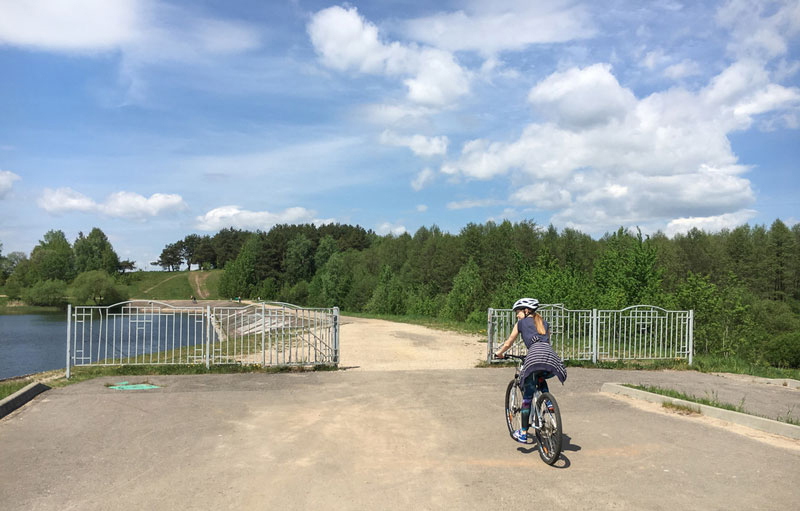
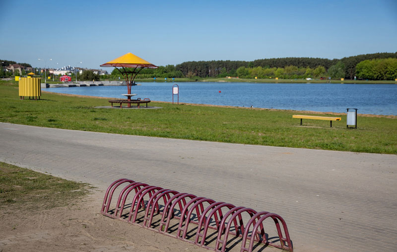
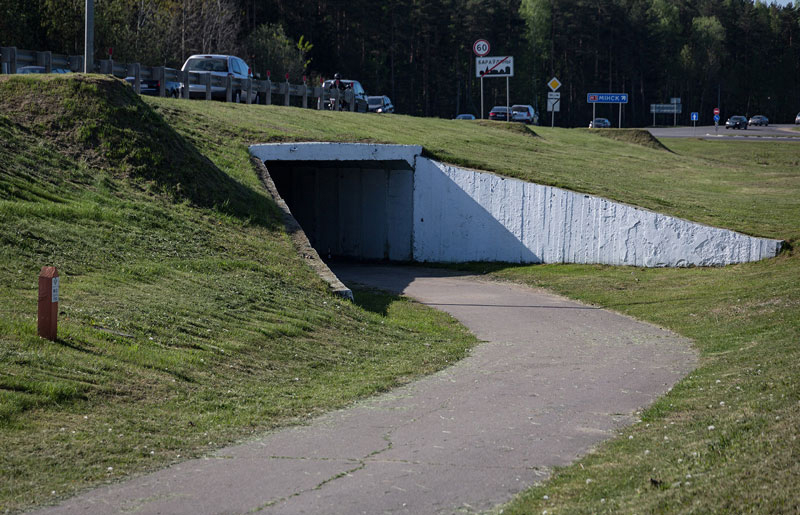
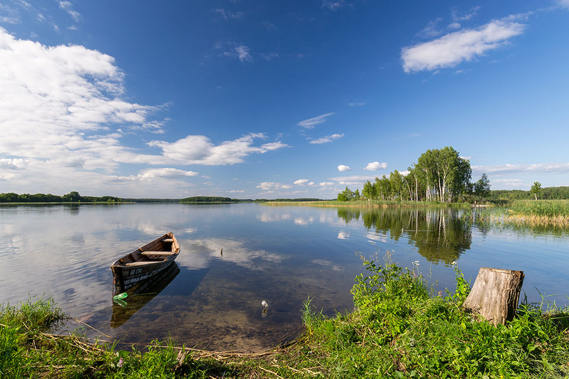
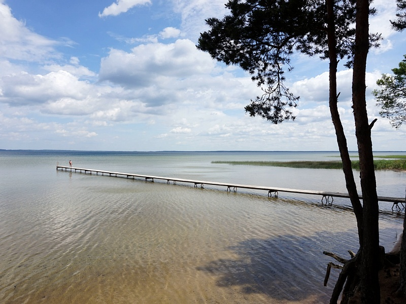
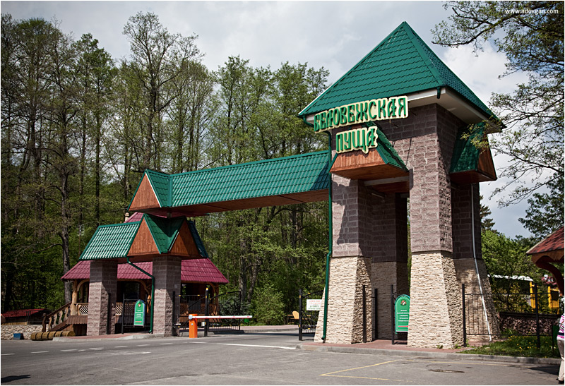
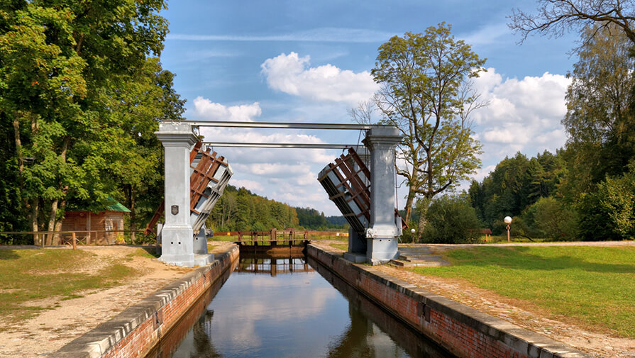

Велодвижение в Беларуси становится все более популярным, а вместе с этим развивается и необходимая инфраструктура. Кроме велодорожек, разметок и прочих удобств для велосипедистов, появляются также новые веломаршруты. Предлагаем Вашему вниманию подборку лучших веломаршрутов – как из давно действующих, так и из относительно новых. Выбери свой путь!
Велопрогулки по Минску
Дрозды
Oдин из самых доступных веломаршрутов, он очень простой и не требует какой-то особенной подготовки: смело берите в поездку семью, детей, друзей – все получат удовольствие. Дорога хоть и не имеет твердого покрытия, но хорошо укатана и даже обычный летний дождь не создаст особых проблем. Здесь можно легко проехать на велосипеде любого класса и уровня.
Минское море

Особенность: покрытие здесь значительно хуже грунтовки в Дроздах, имеются участки с достаточно глубоким слоем песка, по которому затруднительно ехать на шоссейном велосипеде. Человек на «горнике» не столкнется с ощутимыми проблемами: рельеф ровный, а протяженность дороги небольшая.
Цнянское водохранилище
Территорию вокруг Цнянского водохранилища облагородили. Без проблем можно объехать озеро по кругу. По большей части дорога здесь гравийная, но ехать легко, серьезных подъемов нет. Со стороны жилых кварталов есть полноценная велодорожка – асфальтированная, с нанесенной разметкой.
Раубичи
Этот маршрут берет свое начало практически на Логойском тракте. И дальше сплошь безопасный асфальт, где вы не будете соседствовать ни с автомобилями, ни с пешеходами. Велодорожка до «Раубичей» находится в неплохом состоянии, хотя во многих местах уже требует ремонта. Здесь нет тяжелых подъемов или опасных спусков. Равнинный ландшафт и шелестящая в стороне трасса М3 – и больше ничего
Велопрогулки по Беларуси
Браславские озера
Национальный парк «Браславские озера» разработал 7 велосипедных маршрутов. Самый простой и короткий называется «Тропа» и составляет 2,5 км. Он пролегает по бывшему заказнику «Дубки» и предназначен для новичков. На этом маршруте можно также заниматься скандинавской ходьбой, пройтись пешком или на лыжах. Самый длинный веломаршрут составляет 110 км. Это «Вокруг озер», начинается он с выезда из Браслава, далее идут деревни Слободка, Луни, Леошки, Красногорка, Струсто и снова город Браслав. Это отличный маршрут, чтобы испытать себя, предназначен для туристов со средним и обычным уровнем физической подготовки.
Нарочанский национальный парк
Беловежская пуща – не единственный национальный парк с созданными на его территории тропами, отмаркированными для велопрогулок. Маршрут по культурным ландшафтам «Дорогами Межозерья» предлагает Национальный парк «Нарочанский». На сайте учреждения можно найти путеводитель по маршруту с отметками наиболее значимых объектов историко-культурного наследия этого живописного уголка Беларуси. Также для велосипедистов, отдыхающих в агроусадьбах, «Нарочанский» предлагает маршруты по парку с интересными объектами вблизи усадеб: «Комаровский край», «Свирский край» и другие.
Беловежская пуща
В Беловежской пуще предлагается 5 велосипедных маршрутов разной протяженности. Каждый из них по-своему интересен: где-то на пути вы повстречаете место стоянки татар XIII века, окруженное болотами, где-то – дуб возрастом свыше 300 лет или березу с головой зубра… В Национальном парке можно арендовать велосипеды, а можно путешествовать на собственном. Прогулки на велосипеде по Беловежской пуще платные.
Августовкий канал
У Августовского канала расположено четыре маршрута разной протяженности. Самый длинный из них – «Лисья гора». Здесь вы встретите дворцово-парковый комплекс Гурских, могилу повстанцев 1963 года, обелиск погранзаставе им. Сивачева и другие достопримечательности.